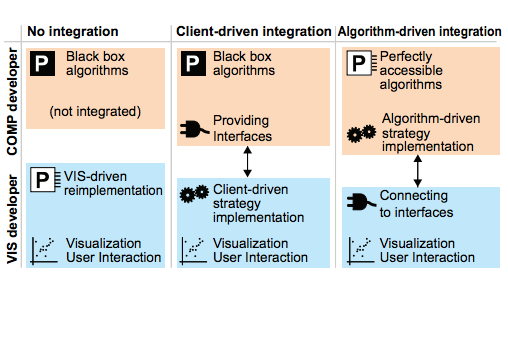

Opening the Black Box: Strategies for Increased User Involvement in Existing Algorithm Implementations

Venue. TVCG (2014)
Abstract. An increasing number of interactive visualization tools stress the integration with computational software like MATLAB and R to access a variety of proven algorithms. In many cases, however, the algorithms are used as black boxes that run to completion in isolation which contradicts the needs of interactive data exploration. This paper structures, formalizes, and discusses possibilities to enable user involvement in ongoing computations. Based on a structured characterization of needs regarding intermediate feedback and control, the main contribution is a formalization and comparison of strategies for achieving user involvement for algorithms with different characteristics. In the context of integration, we describe considerations for implementing these strategies either as part of the visualization tool or as part of the algorithm, and we identify requirements and guidelines for the design of algorithmic APIs. To assess the practical applicability, we provide a survey of frequently used algorithm implementations within R regarding the fulfillment of these guidelines. While echoing previous calls for analysis modules which support data exploration more directly, we conclude that a range of pragmatic options for enabling user involvement in ongoing computations exists on both the visualization and algorithm side and should be used.
Link to this page: